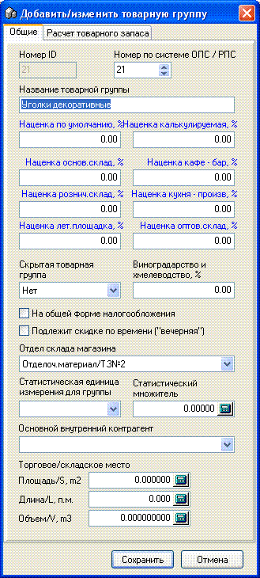
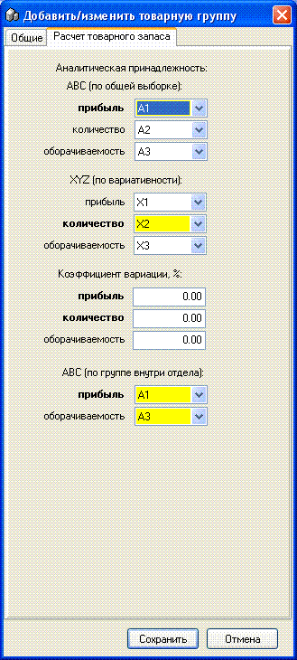

- 
Номер - не редактируется, присваивается автоматически.
Номер по системе ОПС / РПС - номер для спецотчета по реализации по форме предприятий потребкооперации (данный отчет может использоваться и прочими предприятиями).
Название товарной группы - введите до 35 символов.
Наценка по умолчанию, % - значение наценки, которое при приходе товара из данной товарной группы будет проставляться по умолчанию на каждую приходуемую партию и иметь приоритет.
 Примечание: в
программе существует 3(три) уровня наценки: 1. на товарную группу в целом
(данная наценка); 2. на товар индивидуально - в карточке конкретного товара, и
эта наценка имеет приоритет над групповой! (при приходе этого товара в
качестве наценки партии по умолчанию будет предлагаться число проставленное в
карточке товара, подробнее см. "Справочник товаров и печать ценников"); 3. Вы
вручную можете установить любую наценку, которую считаете нужной.
Примечание: в
программе существует 3(три) уровня наценки: 1. на товарную группу в целом
(данная наценка); 2. на товар индивидуально - в карточке конкретного товара, и
эта наценка имеет приоритет над групповой! (при приходе этого товара в
качестве наценки партии по умолчанию будет предлагаться число проставленное в
карточке товара, подробнее см. "Справочник товаров и печать ценников"); 3. Вы
вручную можете установить любую наценку, которую считаете нужной.
В настройках программы (на вкладке "Наценка - Переучет") также можно включить режим при котором начнут действовать индивидуальные наценки на каждую товарную группу в зависимости от типа склада на который приходуется или перемещается данный товар, при этом данной значение наценки для конкретного склада имеет приоритет над "Наценкой по умолчанию" на группу товара. Дополнительно смотрите раздел справки Справочник складов.
Наценка калькулируемая, % - наценка формируемая внешним инструментарием к ПО, по данным анализа. За более подробной информацией обращайтесь к разработчику.
Скрытая товарная группа - со временем некоторые товарные группы стают ненужными, удалить их нельзя т.к. они участвуют в оборотах и отчетах прошлых периодов, но можно пометить их как скрытые и при выборе соответствующего режима отображения в справочнике товарных групп (см. ниже) их не будет видно в данном справочнике.
Виноградарство и хмелеводство, % - в отличие от ставки акцизного сбора, проставляемой на каждый товар индивидуально, этот сбор проставляется на всю группу. По этому признаку можно делать отчеты (см. соответствующий раздел ниже).
На общей форме налогообложения - групповой признак по которому также в отчетах можно разделять информацию.
Примечание: По данному
признаку также можно разделять признак печати товара на фискальном
регистраторе или нефискальном принтере (подробнее см. раздел справки
Сервис/Опции/вкладка Чек).
Подлежит скидке по времени ("вечерняя") - на данную товарную группу, кроме других видов дисконта, распространяется скидка по времени суток, или т.н. "вечерняя" скидка (для настроек см.раздел "Настройка программы" подраздел "Вкладка Скидки").
Отдел склада магазина - можно выставить принадлежность товарных групп к определенным отделам, а отделов к кассовым местам и на определенных рабочих станциях разрешить кассирам видеть и добавлять товар только с "их" отделов.
Статистическая единица измерения для группы - ед.измерения в которую будет преобразовываться реализация товара с разными ед.измерениями в спец.отчете по форме предприятий потребкооперации (данный отчет может использоваться и прочими предприятиями). Например, в товарной группе могут быть кг, л, г, шт, а стат.ед.изм для группы - тонны.
Статистический множитель - коэффициент на который умножается сумма вычисленных статистических количеств по каждому товару (см. справку Справочник товаров), чтобы привести проданное количество к статистической единице измерения.
Основной внутренний контрагент - выбирается из справочника Контрагентов. Параметр участвует в некоторых отчетах.
Торговое складское место (площадь, длина, объем) - логистические характеристики.

Расчет товарного запаса - вкладка с набором
маркетинговых и логистических характеристик товарной группы. За дополнительной
информацией и инструментарием для работы с ними обращайтесь к
разработчику.